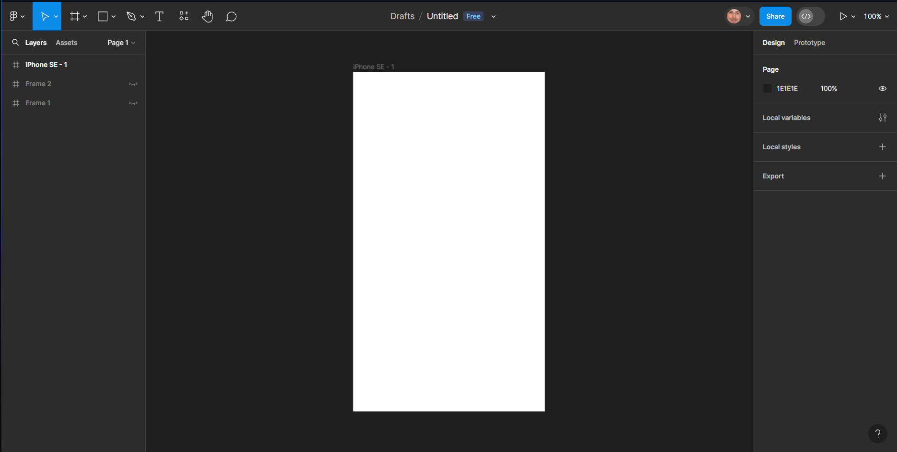
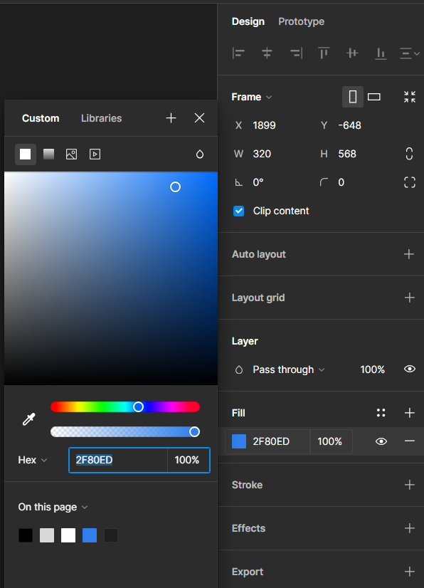
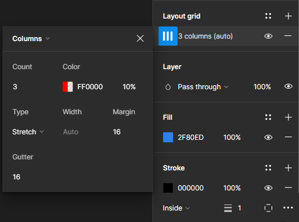
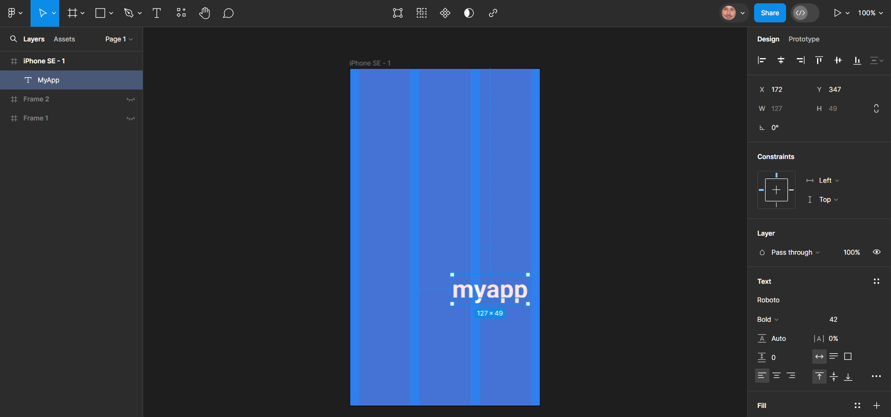
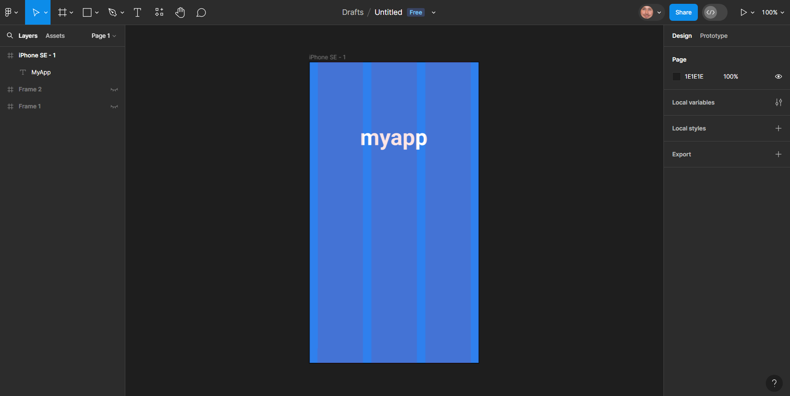
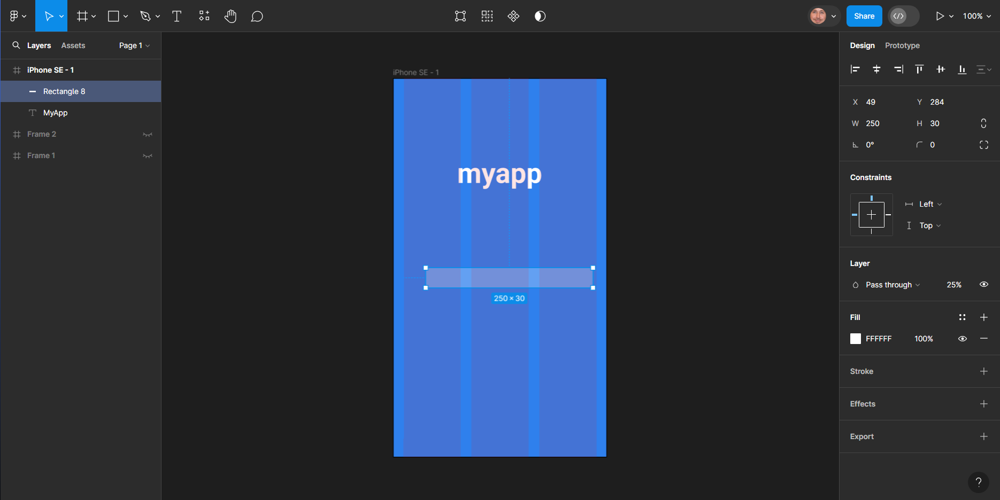
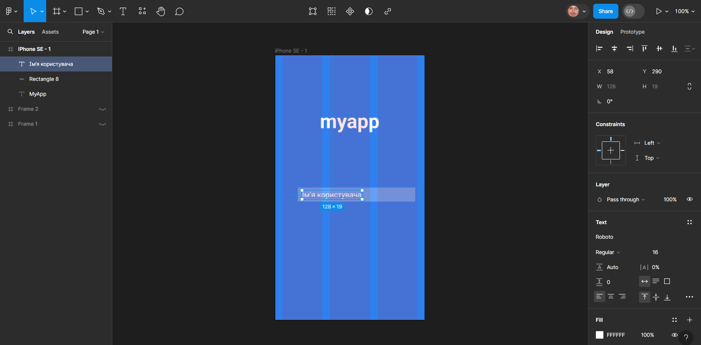
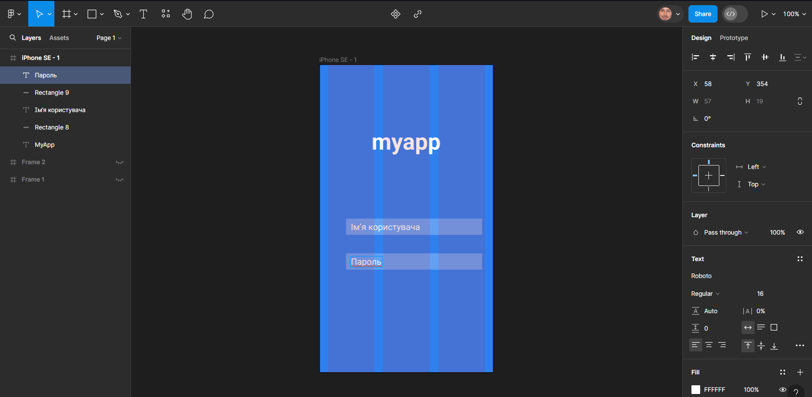
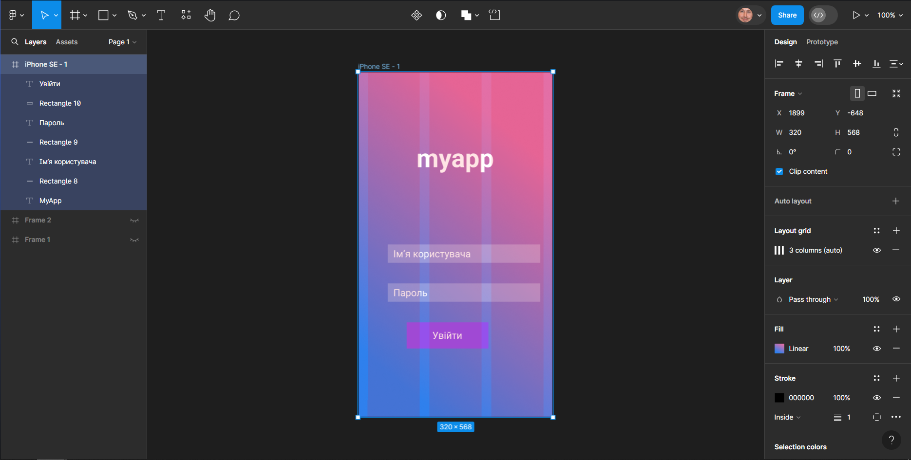
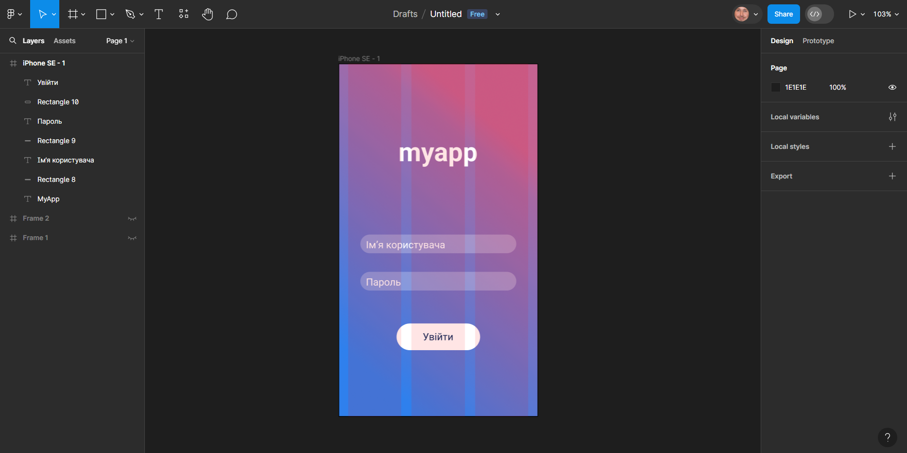

Створення першого макету
Вітаю на proFigma! На минулих заняттях ми розглянули основні функціональні можливості Figma. Знання основних теоретичних положень дозволяє зорієнтуватися на початку навчання,
але, на мою думку, найцінніші знання все ж таки здобуваються на практиці. Тож давайте розпочнемо створення першого макету вже зараз!
В ході цього заняття нам доведеться створити макет головного екрану мобільного застосунку для обміну фотографіями.
1.Створіть новий фрейм
Перш за все — створіть новий дизайн-файл для нашого макету.
Це можна зробити, обравши пункти File - New design file, натиснувши на логотип Figma у лівому верхньому куті вікна.
Далі, натисніть F або оберіть інструмент Frame. Для даного заняття я використовую рамку iPhone SE з параметрів у правій частині екрану.
Ви можете обрати варіант, який вам більше до вподоби.

Тепер давайте встановимо колір фону для цього екрану.
Вибравши нову рамку, перейдіть до панелі властивостей праворуч. Натисніть білий квадрат під написом "Fill" та виберіть колір. Мною обрано відтінок синього з кодом #2F80ED.

2.Додайте модульну сітку
Важливо працювати з модульною сіткою навіть коли ми розробляємо дизайн для мобільних пристроїв.
Цей інструмент допомгає робити більш точні рішення при компонуванні елементів на екрані.
У Figma дуже легко додати сітку стовпців.
Оберіть рамку, клацнувши на неї на панелі шарів або на полотні, а потім натисніть значок «+» на панелі властивостей під пунктом "Grid".
Я пропную встановитит наступні параметри:
- Count: 3 (утворюється 3 стовпці)
- Gutter: 16 (це додає 16 пікселів простору між кожним стовпцем)
- Margin: 16 (це додає 16 пікселів простору по краях рамки)

3.Додайте назву застосунку
Давайте створимо "wordmark" за допомогою інструменту "Text".
"Wordmark" — це, по суті, назва компанії чи продукту, наведена в красивому вигляді лише з використанням тексту.
Натисніть T щоб вибрати інструмент "Text", оберіть будь-яке місце на екрані та введіть назву програми.
В даному випадку для тексту встановлено такі параметри:
- Шрифт: Roboto Bold
- Розмір тексту: 42 пікселя
- Регістр: нижній

Ви можете перетягувати текст по всьому полотну, утримуючи кнопку миші. Зверніть увагу, при перетягування з’являються направляючі лінії,
які вказуватимуть, що текст розміщено по центру. Коли він буде відцентрований, відпустіть кнопку миші.

4.Створіть поле для введення імені
Ми можемо легко створити кілька полів для входу в застосунок, використовуючи прямокутники та текст.
Спочатку виберіть інструмент "Rectangle", R. Створити прямокутник приблизно 250 пікселів завширшки та приблизно 30 пікселів у висоту.
Зверніть увагу, як Figma відображає розмір фігури в числах, коли ви її малюєте.
Змініть колір заливки на білий (#FFFFFF).
Тепер потрібно зробити фігуру напівпрозорою.
Параметр прозорості позначається у вигляді числа, яке відображається на панелі властивостей у розділі "Layer" поруч із написом "Pass through".
За замовчуванням встановлено 100% — давайте змінимо це значення на 25%.
Ви також можете встановити це, просто вибравши об’єкт і ввівши потрібне значення непрозорості.
Спробуйте — виберіть прямокутник і просто введіть «25».

Далі натисніть T щоб повернутися до інструмента "Text".
Клацніть в будь-якому місці рамки та введіть "Ім’я користувача".
Шрифт, імовірно, все ще буде встановлено відповідно до параметрів, які ви використовували раніше,
тому, завершивши введення, виділіть текст і змініть накреслення на Regular, розмір 16 пікселів, а регістр на "Як введено".
Перетягніть текстову мітку на прямокутник. Тепер в нас є готове поле для введення ім'я!

Самотужки переконайтеся, що текст "Ім’я користувача" правильно розташований відносно прямокутника.
Ви можете зробити це, клацнувши один раз на текстовому шарі, а потім "підштовхуючи" його на 1 піксель за раз за допомогою клавіш зі стрілками.
Якщо утримувати Shift ⇧ під час використання клавіш зі стрілками, крок збільшиться до 10 пікселів.
5.Створіть поле для введення паролю
Скопіюйте текстове поле дляв веденя імені користувача. Розмістіть дублікати об’єктів так, щоб вони знаходилися прямо під полем існуючим полем.
Потім просто двічі клацніть на текст "Ім’я користувача" та замініть його на "Пароль".
Дублювати елементи у Figma дуже легко. З обраним інструментом "Move" V, виділіть елементи,
які бажаєте скопіювати та натисніть Ctrl + C. При використанні комбінації Ctrl + V текст
буде вставлено з координатами скопійованого елементу. Такого ж результату можна досягти, використовуючи контекстне меню, яке доступно на полотні, натиснувши праву кнопку миші.

7.Зробіть фон цікавішим
У Figma ми можемо легко застосувати градієнти до фону наших фреймів, щоб зробити їх більш захоплюючими.
Почніть із вибору фрейму та переходу до розділу "Fill" на панелі властивостей праворуч. Далі клацніть на зразок синього кольору прямо під написом "Fill".
Це відкриє панель кольорів. У верхній частині кольорової панелі, де написано "Custom", натисніть кнопку "Gradient" та трохи поексперементуйте.

Виберіть колір, який, на вашу думку, добре переходить у поточний колір фону. Будьте творчими!
Мною обрано рожевий (#E36FA6). Можливо, на додачу вам доведеться змінити прозорість, як в моєму випадку.
8.Вирівняйте та вдоскональте макет
Останнє, що потрібно зробити сьогодні, це переконатися, що все добре вирівняно. Ось деякі речі, які слід перевірити:
- Чи збігаються поля для імені та паролю користувача зі стовпцями?
- Чи всі інтерактивні елементи достатньо розподілені, щоб користувачі випадково не торкалися не того?
- Чи все по центру рамки?
Як бачите, на цьому етапі мною було внесено деякі інші вдосконалення: змінено колір тла кнопки "Увійти" на білий та налаштовано розмір кнопки так, щоб вона займала всю ширину стовпця.
До того ж було змінено кути елементів на закруглені.

Вітаю Вас зі створенням першого макету!
Сьогодні ми розглянули всі основні кроки для створення макету сторінки для входу в мобільний застосунок. Далі все залежить тільки від Вас.
На наступному занятті ми продовжимо тему створення дизайну мобільного застосунку для обміну фотографіями та навчимось створювати прототипи.
Перш ніж перейти до нової теми, пропоную Вам створити декілька сторінок та наповнити їх як побажаєте.